Manual de Usuario ¶
Selección de lenguaje ¶
En el pie de página tendremos la opción de cambiar el idioma de la página.
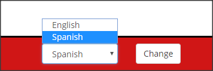
Registro e Inicio de sesión ¶
Para registrarse es necesario un nombre de usuario, una contraseña y un email. Al email registrado se enviará un email de confirmación, aunque no es necesario confirmar para usar la aplicación.
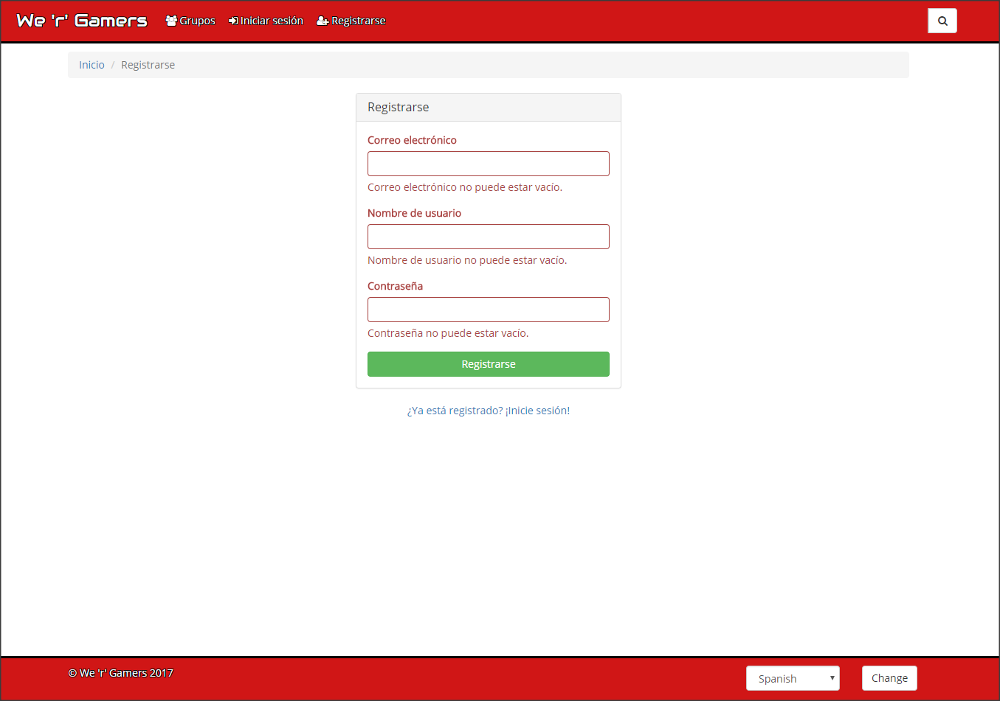
Para iniciar sesión es necesario nuestro usuario y nuestra contraseña.
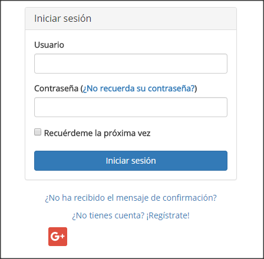
Tambíen podremos iniciar sesión usando nuestra cuenta de Google.
Una vez hemos iniciado la sesión tendremos las siguientes secciones en la barra de navegación:
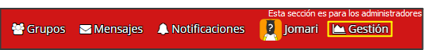
Y también veremos nuestro perfil:
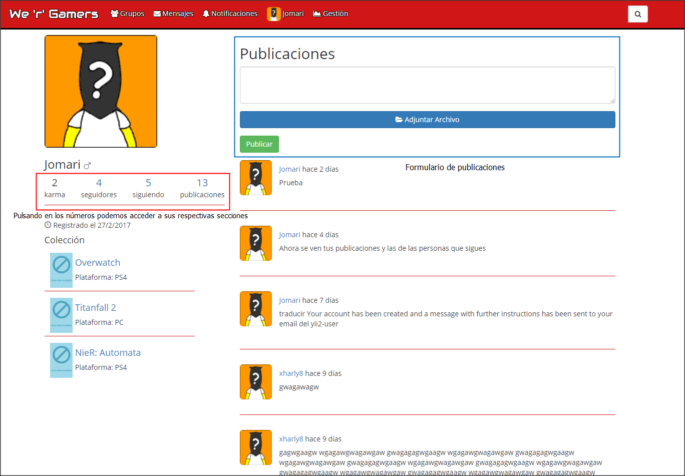
En el podemos hacer publicaciones que veremos nosotros y la gente que nos sigue, nuestros seguidores, nuestro seguidos y el karma, que la suma de los votos que nos dan otros usuarios al visitar nuestro perfil. En el perfil de otros usuarios puedes votarles y además hacernos seguidor suyo.
Configuración del perfil ¶
Cuando entremos a la configuración del perfil tendremos 4 páginas:
- Configuración de los datos del perfil
En esta paǵina podremos modificar los datos de nuestro perfil, es importante elegir nuestra zona horaria para que los horas se muestren correctamente.
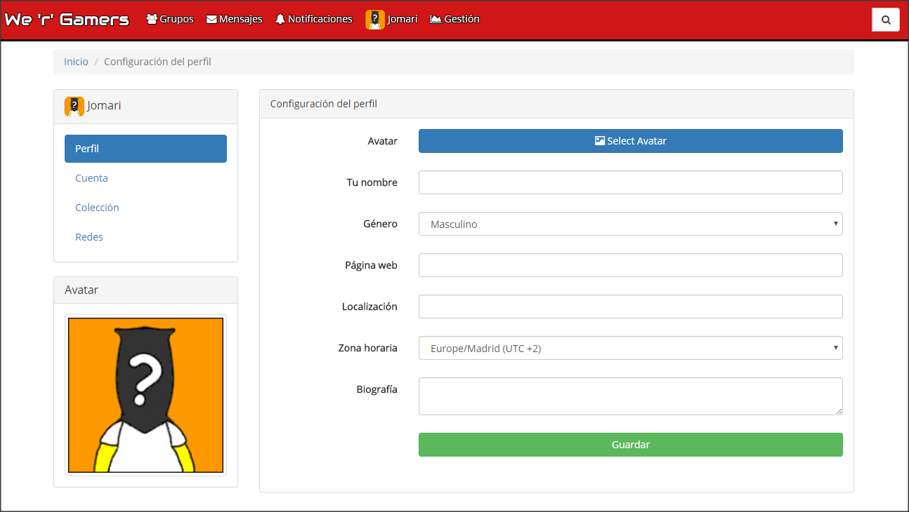
- Configuración de la cuenta
Aquí podreemos modificar los datos relativos a nuestra cuenta, así como borrarla.
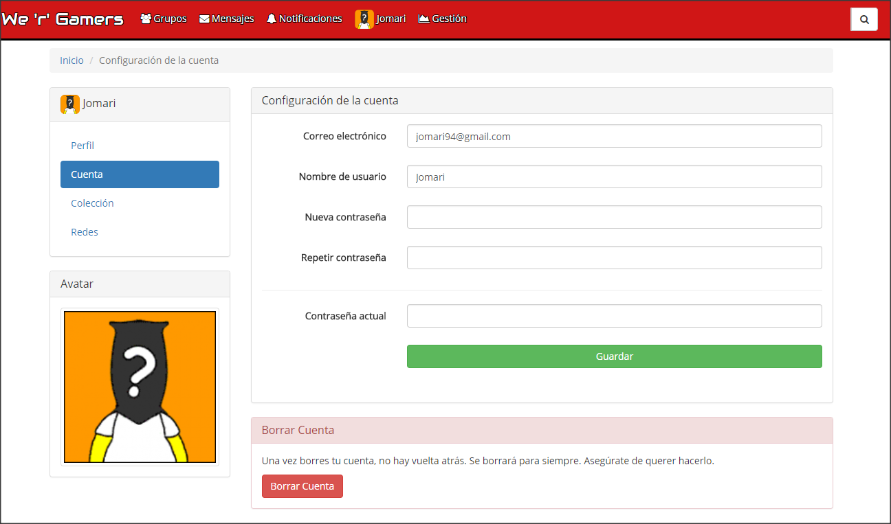
- Configuración de la colección
Aquí podremos elegir los juegos que tenemos en la colección haciendo click en loscheckbox que aparecen a la derecha.
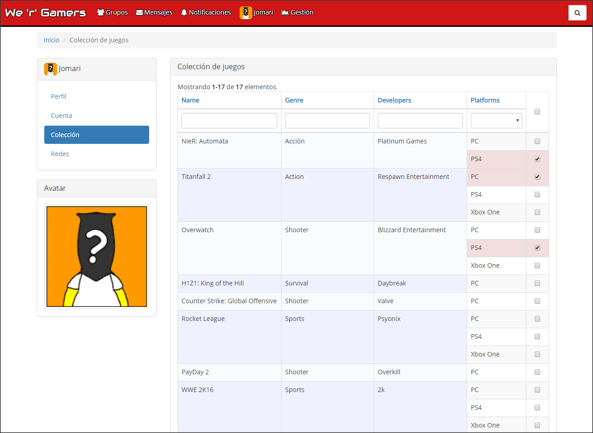
- Configuración de las redes
Aquí podremos conectar o desconectar nuestra cuenta con la de google.
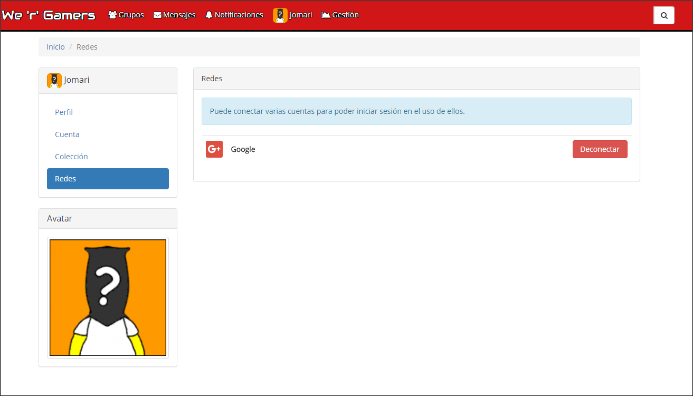
Búsqueda ¶
Hay un buscador en la parte derecha de la barra de navegación que se despliega al poner el ratçon sobre él:
Una vez escribamos aparecerán sugerencias de usuarios y juegos:
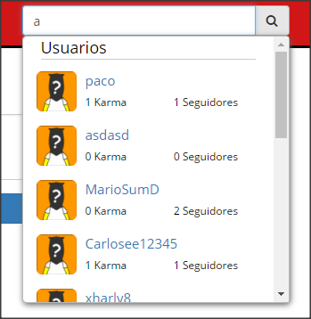
Y si hacemos click nos diriguremos a la página de búsquedas, donde además podremos buscar grupos y publicaciones.
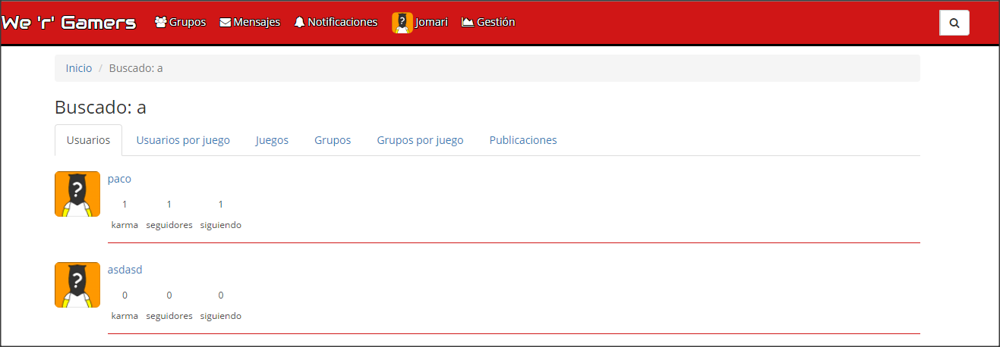
Notificaciones ¶
Cuando tenemos notificaciones pendientes se verán en la barra de la siguiente manera:
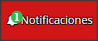
Si hacemos click sobre esta opción del menú se abrirá una ventana modal donde podremos verlas:
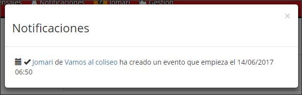
Las notificaciones se crearán por distintos motivos:
- Una solicitud recibida para unirse a un grupo tuyo en el que eres administrador.
- Un usuario te sigue.
- Se crea un evento en un grupo al que perteneces.
- Se cancela un evento en un grupo al que perteneces.
- Un usuario te envía un mensaje privado.
Mensajes privados ¶
Podrás acceder haciendo click en la opción Mensajes del menú, lo que abrirá una ventana:
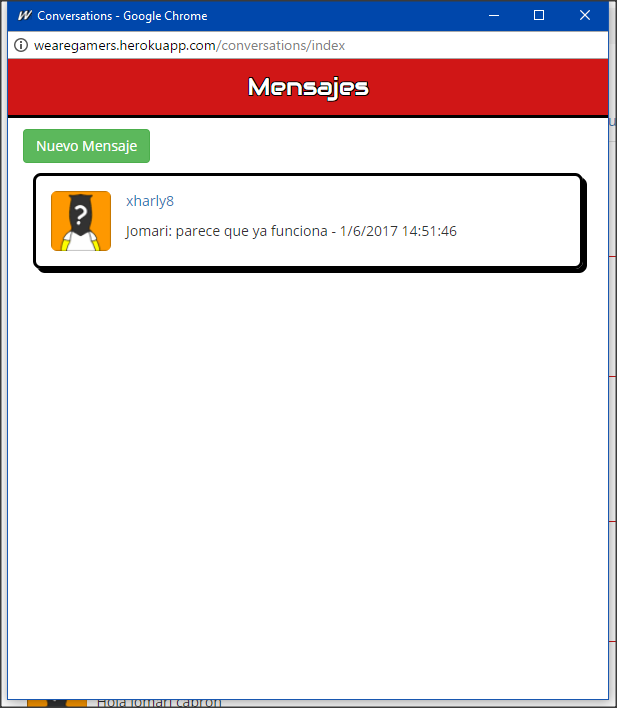
Si hacemos click en Nuevo Mensaje podremos iniciar una conversación con alguien:
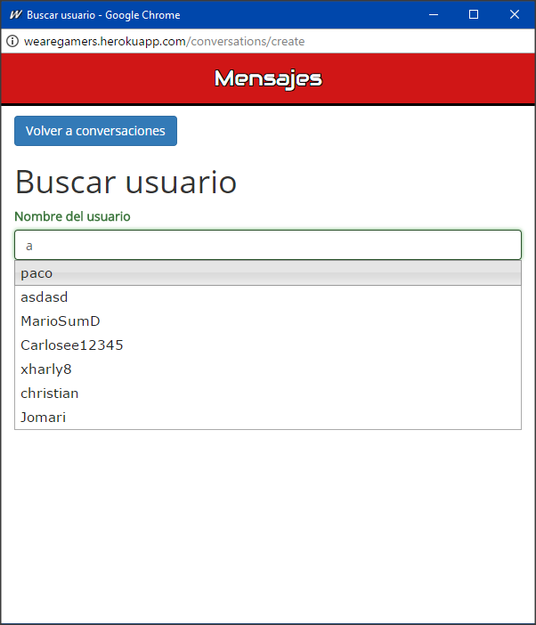
Y una vez busquemos al usuario y hagamos click a crear, o en la ventana inicial escojamos una conversación accederemos a la ventana de la conversación:
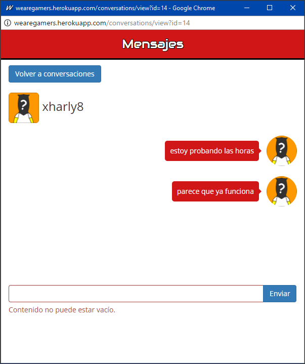
Esta ventana se cerrará al cerrar sesión.
Grupos ¶
Si haces click en la opción Grupos del menú iremos a la página de los grupos:
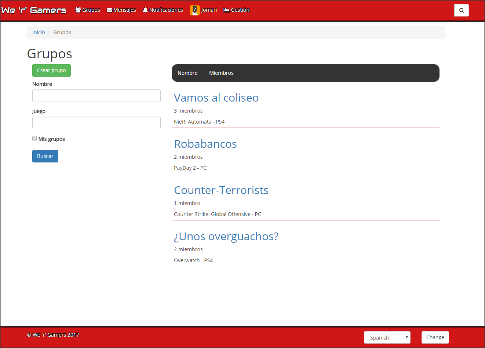
Aquí podremos ordenar por nombre y número de miembros, así como filtrar por nombre, juego asociado o los grupos a los que perteneces.
Una vez entramos hay que hacer una solicitud de unión haciendo click en unirse, y cuando un administrador del grupo la acepte ya eres miembro.
Si eres miembro del grupo tendrás la opción de dejar el grupo, y además podrás ver el contenido y participar en el chat.
Los grupos tienen una cuenta atrás para un evento y un chat:
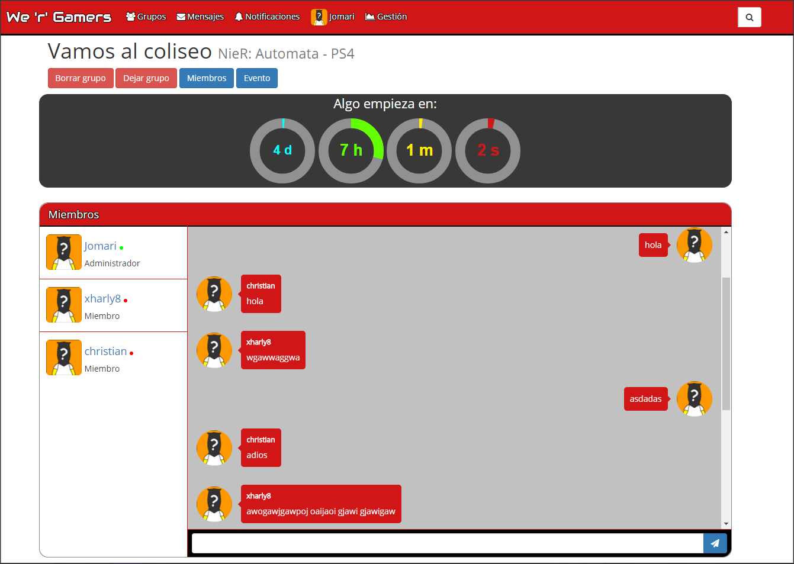
Si eres el administrador de la aplicación tendrás la opción de borrar el grupo, si eres administrador del grupo podrás administrar eventos:
- Crear evento:
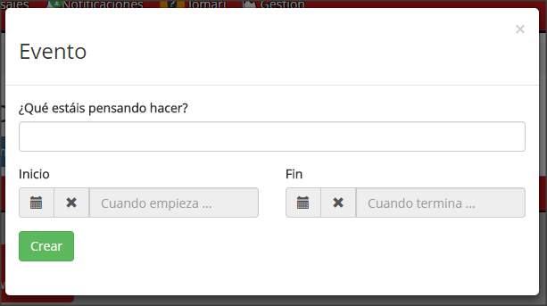
- Modificar o cancelar el evento:
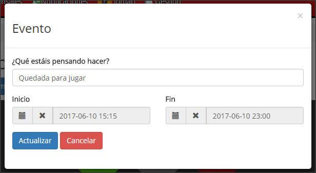
Si lo cancelas desaparecerá el contador de la página y si el evento tiene una fecha de fin una vez llegue el contador para que empiece a 0, aparecerá otro que indica el tiempo que queda para que termine el evento.
Y también podrás aceptar y rechazar solicitudes, así como expulsar o promocionar a miembros que no sean administradores:
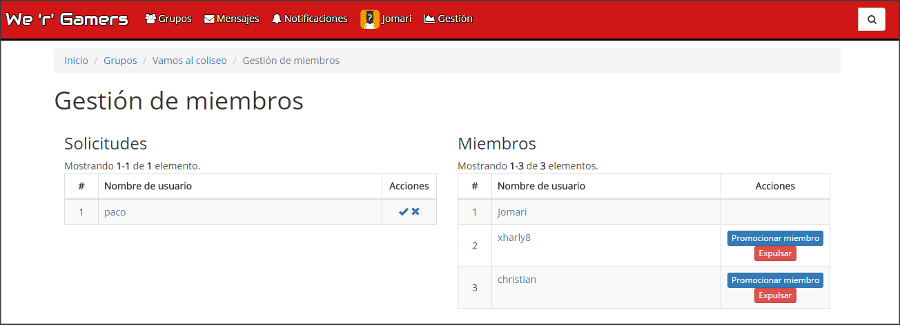
Reseñas ¶
En la página de un juego podremos publicar una reseña del juego, con una puntuación.
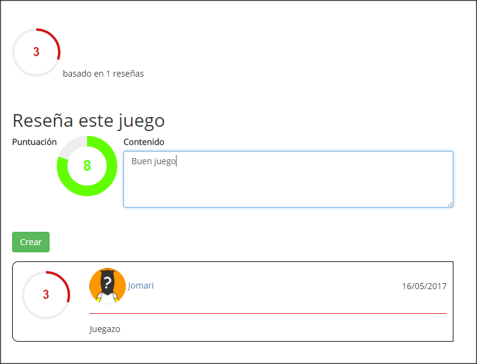
Gestión de usuarios ¶
Como administrador de la aplicación podrás gestionar usuarios:
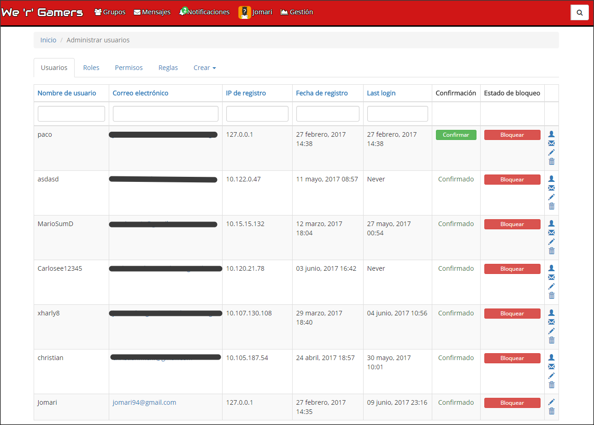
En esta página tendrás la opción de bloquear usuarios, confirmarlos, así como modificar sus datos y también acceder a la aplicación con su cuenta. También podrás modificar los permisos, las reglas asociadas a ellas y los roles de los usuarios.
Gestión de juegos ¶
Como administrador de la aplicación también podrás gestionar los juegos:
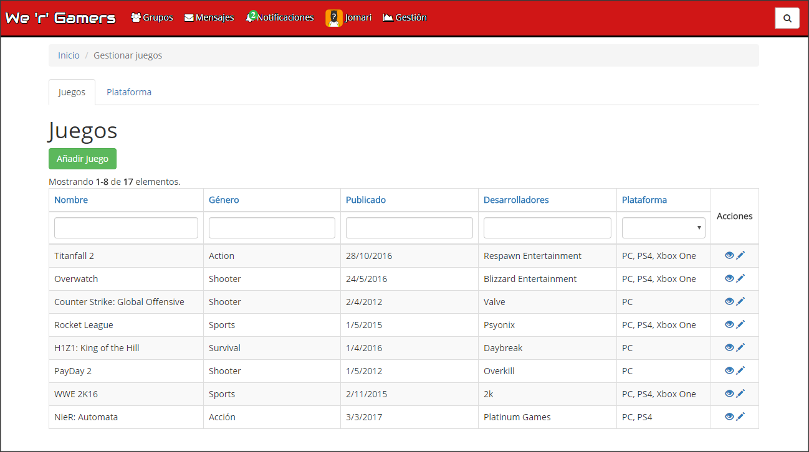
En esta página podrás crear juegos y plataformas, así como modificar sus datos.